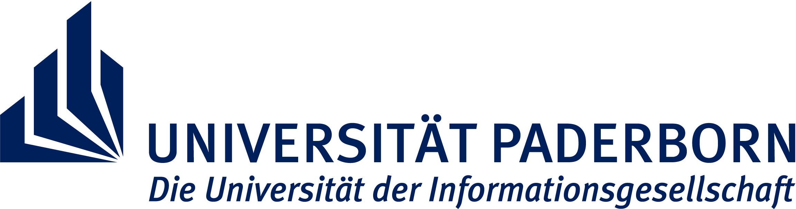

Standorte
International Audio Laboratories Erlangen
Die International Audio Laboratories Erlangen (AudioLabs) sind eine gemeinsamene Einrichtung des Fraunhofer-Instituts für Integrierte Schaltungen IIS und der Friedrich-Alexander-Universität Erlangen-Nürnberg.
Die an den AudioLabs durchgeführten Forschungen rund um die Verarbeitung von Audiosignalen und die in der Gruppe von Prof. Dr. Meinard Müller entwickelten Verfahren der Synchronisation von Audio und symbolischen Musikdaten stellen einen wesentlichen Aspekt der im Projekt durchgeführten Forschung (Arbeitspaket 2) dar.
International Audio Laboratories ErlangenAm Wolfsmantel 33
91058 Erlangen
Tel: +49 9131 85-20504
URL: www.audiolabs-erlangen.de/meinard/ Prof. Dr. Meinard Müller
meinard.mueller@audiolabs-erlangen.de
Institut für Informatik, Universität Paderborn
Unter der Leitung von Prof. Dr. Gerd Szwillus beschäftigt sich das Fachgebiet Mensch-Computer-Interaktion mit Fragestellungen zu Wechselwirkungen zwischen Benutzer und Softwaresystemen.
Die Forschungen der Gruppe rund um die Thematik der Gebrauchstauglichkeit (Usability) von digitalen Werkzeugen wird das Projekt in allen Bereichen der Softwareentwicklung begleiten. Im Rahmen der Integration von Benutzerinteraktionen (Arbeitspaket 5) werden die Erkenntnisse und Verfahren der Gruppe von besonderer Bedeutung sein.
Universität Paderborn, Institut für Informatik, Fachgebiet Mensch-Computer-InteraktionFürstenallee 11
33102 Paderborn
Tel: +49 5251 60-6624
URL: www.cs.uni-paderborn.de/no_cache/fachgebiete/fg-mci.html Prof. Dr. Gerd Szwillus
szwillus@upb.de
Institut für Musikwissenschaft, Goethe-Universität Frankfurt
Das Institut für Musikwissenschaft der Goethe-Universität unter der Leitung von Prof. Dr. Thomas Betzwieser hat seinen Forschungsschwerpunkt im Bereich der neueren europäischen Musikgeschichte und hier im Besonderem im Musiktheater.
Die im Projekt durchzuführenden Forschungen zur Libretto-Edition (Arbeitspaket 4) und die Interpretationsvergleiche sowohl der Aufführungsmaterialien als auch zur textuellen und akustischen Varianz (im Rahmen des Arbeitspakets 6) stehen in engem Zusammenhang mit den bereits im Institut verankerten Themenfeldern.
Goethe-Universität, Institut für MusikwissenschaftSenckenberganlage 31
60325 Frankfurt/Main
Tel: +49 69 798-23515
URL: www2.uni-frankfurt.de/43265859/muwi Prof. Dr. Thomas Betzwieser
betzwieser@em.uni-frankfurt.de
Musikwissenschaftliches Seminar Detmold/Paderborn
Das in Detmold ansässige Musikwissenschaftliche Seminar Detmold/Paderborn ist eine gemeinsame Einrichtung der Hochschule für Musik Detmold und der Universität Paderborn.
Die langjährige Erfahrung im Bereich digitaler Editionen zeichnet die Arbeit des Seminars aus. Die Projekte zum Codierungsstandard MEI, Infrastrukturentwicklungen (TextGrid, DARIAH) und speziellen Softwarelösungen für digitale Musikedition (Edirom) werden ergänzt durch die Umsetzung eines genuin digitalen Editionskonzepts im Rahmen dieses Projekts.
Musikwissenschaftliches Seminar Detmold/PaderbornHornsche Str. 39
32756 Detmold
Tel: +49 5231 975-663
URL: www.muwi-detmold-paderborn.de Prof. Dr. Joachim Veit
jveit@mail.uni-paderborn.de